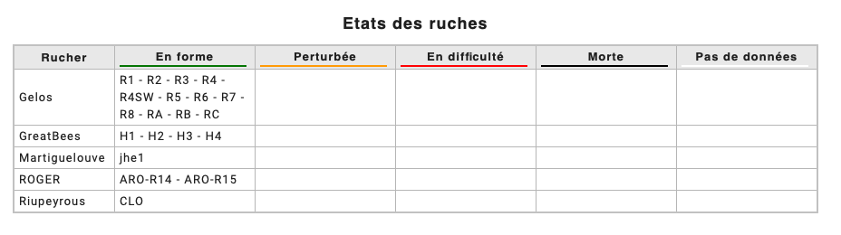

Interprétation des données
Dans cette partie sont abordés les aspects plus techniques du fonctionnement de Mellisphera. On y présente les différents modèles BFIT, BFORCE, BWEIGHT ainsi que les sources METEO et les ALERTES.
Etat des ruches - BFit
BFIT comme Bee Fitness est l'algorythme qui informe l’apiculteur de l'état de chaque ruche. Nous utilisons des repères comme la période de la saison et l’état des ruches environnantes pour définir un état « nominal » de la ruche. Ensuite, nous positionnons chaque ruche par rapport à cette référence.
Le rendu est très visuel avec des pastilles de couleurs (noir, rouge, orange, vert) pour indiquer leur état. Pour compléter l'information une infobulle précise la nature de la situation.

Le code couleur est le suivant :
- Noir : Votre ruche est déclarée morte
- Rouge : Votre ruche est en difficulté
- Orange : Votre ruche est perturbée (en déclin ou présente des événements anormaux)
- Vert : Tout va bien pour votre ruche
- Blanc : Pas de données sur votre ruche (ou pas de météo)

En activant l'envoi d'alertes dans Mellisphera vous recevrez par email un tableau récapitulatif avec l'ensemble des informations :

BFit repose sur les algorithmes qui collectent les événements. L’algorithme ‘Learning’ apprend des événements précédents pour conserver, ou non, les événements futurs. Il y a, par la suite, une classification entre les événements détectés ayant une incidence sur l’état de la ruche et les autres.
BFit prend aussi en compte les résultats fournis par BForce. De cette façon il est capable de déterminer l’écart entre la dynamique actuelle de la ruche et une dynamique du couvain théorique en constante évolution. Cette dynamique théorique est régulièrement actualisée. Elle prend également en compte les diférentes régions du monde pour fournir des informations pertinentes selon la latitude ou le climat.
Niveau de couvain - BForce
Le développement du couvain est un facteur clé pour les colonies d'abeilles. L'objectif de BForce est de fournir une indication du niveau de couvain dans la ruche sur une échelle de 0 à 100%.
Lorsque la colonie est à plein régime elle atteint un état stable à 35°C. Cet état est associé au 100% de couvain. La ruche est forte. Au contraire lorsqu'elle n'a pas de couvain, les abeilles n'ont pas besoin de réguler la température du nid. Dans ce cas la température interne de la ruche suivra peu ou prou la température ambiante. Dans ce cas on aura 0% de couvain.
Entre ces deux points extrèmes on peut imaginer toutes les situations intermédiaires.

Pour illustrer ces propos, voici les mesures horaires sur deux ruches du même rucher rouge et grise. Chacune présente un état bien différents. La première (en rouge) possède une température interne avoisinant les 25°C/30°C suivant les mêmes fluctuations que la température extérieure (en pointillés), tandis que la seconde (en gris), est constante autour des 35°C dans la fameuse ‘Zone optimale de couvain' ou 'Brood zone'.
Dans cet exemple la ruche grise a une grande proportion de couvain alors que la rouge n’en au que très peu. Bforce met en équation cete caractéristique des colonies pour traduire la mesture brute de température dans une information standardisée et compréhensible. Le modèle prend en compte un certain nombre de paramètres pour estimer au mieux le niveau de couvain.
- température interne de la ruche
- température ambiante
- évolution des colonies voisines
- saison, latitude et climat
- autres évenements identifiés dans la ruche
- type de ruche
A POURSUIVRE ICI **
Ce système est aussi un outil de renforcement dans la détection d’essaimage puisque lorsqu’un essaimage a déjà été détecté par un autre de nos outils de Machine Learning, le couvain s’en voit impacté par la perte de la reine et donc l’arrêt de la ponte. Cela nous permet donc également de classifier nos différents essaimages détectés.
Résultats complets
Les calendriers et graphiques du couvain affichent la progression journalière du couvain dans votre ruche. Les valeurs sont graduées de 0% (pas de couvain) à 100% (couvain complet). En règle générale, 10% est un cadre de couvain, 40% 4 cadres, etc. Selon votre pratique et le modèle de ruche utilisé (Langstroth, Dadant) vous devez ajuster ces relations. Ainsi, les ruches dont le niveau de couvain est supérieur à 80% produisent du miel.
En un coup d’oeil vous avez accès à l’historique de la saison sous forme de calendrier ou de graphique. Les calendriers et graphiques du couvain affichent la progression journalière du couvain dans votre ruche. Vous pouvez également repérer les arrêts et reprise de ponte.


Grâce à ces outils, la comparaison entre ruches et ruchers est aisée.
A force d’utilisation, vous disposerez d’un outil capable de tout analyser d’un simple geste Terminées les inspections où vous ne comprenez pas ce qu’il s’est passé la semaine, vous êtes dorénavant capable de connaitre tous les malheurs de vos abeilles. Vous pourrez donc suivre le développement des colonies au fil d’une saison.

Productivité - BWeight
Informer l’apiculteur de la production de son rucher: voici notre objectif. Comprendre les miellées est un besoin élémentaire pour chaque apiculteur - ou plutôt tacher de les comprendre, tellement le sujet peut devenir complexe.
Constat
Les apiculteurs professionnels développent, au fil des années, ce savoir-faire critique pour leur exploitation. Les apiculteurs de loisir démarrent avec quelques rudiments en essayant de rafiner leur perception au fil des années.
Un des attraits de la pratique de l’apiculture, c’est qu’elle vous immerge dans la nature. Vous devenez un observateur averti de l’écosystème car vous et vos abeilles en dépendez. Au bout d’une saison de pratique, vous assimilez aisément le calendrier des floraisons. En mars le cerisier, en avril le pommier et le colza, en mai l’acacia, en juin le châtaignier… Puis en août c’est la disette… Ce suivi attentif de votre milieu naturel vous permet de percevoir des évènements qui passent inaperçues aux non-initiés. Mais comprendre les floraisons ne veut pas dire comprendre les miellées.
Avoir des fleurs n’implique pas nécessairement l’existence de nectar, donc de ressources pour les abeilles. En effet, nombreux facteurs conditionnent l’existence d’une miellée : la température et l'humidité ambiantes, les dernières pluies et leur intensité, la profondeur des racines pour des plantes comme le colza ou le tournesol. La miellée n’est donc pas acquise ni aisée à identifier.
Mesurer c’est comprendre
Un capteur de poids installé sous la ruche vous donnera des informations bien plus détaillées. D’un simple coup d’œil, il devient possible de suivre le déroulement des miellées, leur intensité et les périodes de disette. Au-delà de l’aspect ludique, il s’agit d’un réel outil d’aide à la décision qui vous permet de juger du moment opportun pour installer une nouvelle hausse ou, au contraire, de soutenir une colonie en manque de réserves. L’apiculture de précision transforme la pratique de l’apiculture. Comprendre les miellées est un atout pour chaque apiculteur. De cette façon, il peut se rapprocher du milieu environnant pour une pratique plus précise, plus intense.
Modèle BWeight
Le modèle repose sur un objectif bien précis. Nous ne voulons considérer que les variations de poids provenant d'une production des abeilles. Nous retirons tous les événements extérieurs : nourrissement, essaimage, ajout/retrait de hausse, interventions de l'apiculteur, perte ou augmentation inexpliquée. Notre algorithme d'intelligence artificielle permet de repérer facilement ces événements bien distincts.
Chaque jour, nous récoltons les apports ou les pertes journalières de poids de vos colonies en éliminant tous ces facteurs, sous forme d'un calendrier. Une graphique en courbe est prévu à moyen terme pour pouvoir suivre d'une autre façon les miellées.

Résultats
Vous pouvez intervenir en conséquence lorsque vous voyez des pertes significatives sur vos ruches, ou au contraire, des augmentations soudaines. En fonction de la période, ces relevés de poids sont très importants.
Il est également visuellement facile de relever une miellée, qui n'est la conséquence que d'une suite de bulles vertes. A vous de faire la jointure avec les fleurs de votre environnement.

A savoir
Il est important de noter qu'une ruche ne sera productive que si son niveau de couvain évalué par BForce est assez élevé et si l'état de la ruche évaluée par BFit est bon. C'est là toute la force de nos modèles: ils travaillent tous ensemble.
Cycle lunaire
Vous êtes nombreux à vous demander à quoi pourrait servir ces données lunaires.
Premièrement, nous vous donnons accès aux heures de lever et coucher du soleil. Cela peut vous donner une estimation grossière des heures de sortie de vos abeilles, si la température extérieure le permet.
Ensuite la lune, couplée à une météo favorable, peut être un vecteur de grande miellée. En effet, on dit que la lune rousse du printemps nuit aux cultures et que les cycles de l'astre de la nuit donnent le tempo à la croissance des plantes. A bon entendeur...
Ce calendrier a été demandé par certains apiculteurs qui utilisent ce calendrier lunaire pour regarder les périodes 'ascendantes', où la croissance des plantes serait au plus fort. Ces périodes sont bleutées sur le calendrier.

Données météorologiques et environnement des colonies
La météo est le facteur environnemental le plus déterminant. Une météo propice permet un bon développement des colonies. Le climat est déterminant pour leur développement.
Il est également important de connaître la météo en avance pour prévoir ses interventions aux ruchers. Voilà le double intérêt de l'analyse des données météorologiques.
Prenons le cas de deux de nos ruchers instrumentés: le rucher A et le rucher B. Le rucher A est dans un environnement plus frais que le rucher B. La température maximale moyenne d’avril 2019 était de 18,2°C pour le premier et 21,2°C pour le second. Trois degrés d’écart qui semblent faire toute la différence puisque le ruche B a produit deux fois plus ce mois-ci. Effectivement, il se trouve que le rucher A se situe dans un bois, sous une couverture végétale d’acacias, alors que le rucher B est également en zone boisée mais au milieu d’une clairière.
Si l'on compare les données du même rucher A l'année précédente, on retrouve une différence notable de 2°C et une production trois fois supérieure l'année passée. L’exposition du rucher et l'environnement sont donc des facteurs clés à l’origine des faibles niveaux de production.
Parfois, les abeilles sont présentes, les ressources aussi, mais pas l’ensoleillement. Il a suffit d’une année un peu plus fraîche que la précédente, 2°C d’écart en température maximale mensuelle, pour limiter la production.
Données brutes
Terminées les données brutes. Avec nos différents systèmes, vous n'avez plus besoin de vous casser la tête à déchiffrer vos courbes ! Nous le faisons pour vous... Nous vous laissons la possiblité de faire votre propre analyse de vos courbes.
Système d'alertes
Les apiculteurs ont énormément à faire et nous voulons leur alléger leur charge de travail. L’objectif est de leur apporter l’information pertinente en temps utile. C’est le rôle du système d’alertes. Pleinement configurable, il parle à l’apiculteur dans le langage métier : essaimage, vol de ruche, pillage, zéro couvain. Ces alertes concernent les événements à l’instant T, mais aussi les risques identifiés à 3 jours - en particulier pour ce qui concerne les prévisions météorologiques.
Voici l'interprétation et l'analyse des alertes qui méritent davantage de détails :
Essaimage
Nous pouvons vous prévenir à 3 jours un risque d'essaimage fort, dépendant de plusieurs facteurs (poids de la ruche, météo annoncé, essaimage récent, etc.).
Nous vous alertons également des essaimages en temps réel ou passés avec notre algorithme de détection liant la température interne de votre ruche et le cas échéant son poids.
Nous pouvons ajuster les essaimages détectés en fonction de vos retours, n'hésitez pas à nous signaler des incohérences ou des oublis.
Ruche volée
Les capteurs ne disposent pas d'une géolocalisation. Cependant, pour les ruches disposant d'un capteur de poids, nous vous alertons lorsqu'une ruche a un poids anormalement faible, déclencheur possible d'un vol.
Météo
L'ensemble des alertes météo ne sont que des alertes de prédiction à J+3 maximum. Elles sont évolutives. Si nous détectons un événement à J+3 et que le lendemain cet événement n'a plus lieu d'être, nous l'effaçons.
Vent
C'est le vent maximum que nous considérons. Dans certaines régions, nous conseillons d'augmenter le seuil par défaut si vous ne soiuhaitez pas être averti régulièrement de certains phénomènes jugés normaux.
Pluie/Neige
Le seuil fixé est relativement haut. C'est pour des cas exceptionnels que cette alerte existe.
Période froide
Sûrement une des alertes les plus importantes. Elle est déclenchée en pleine saison lorsque l'on envisage une période dite 'froide'. Cela inclue des journées ou des nuits jugées fraiches par rapport aux normales de saison. Nous fixons les paramètres nous-même.
Il est important de prévenir à l'avance de ce genre d'événement pour anticiper, par exemple, le nourrissement de vos abeilles.
Couvain
Nous alertons une fois par semaine lorsqu'une ruche a un couvain, suivant le modèle BForce, en dessous du seuil fixé en pleine saison. Cette ruche est à surveiller car son couvain est anormalement faible.
Poids
Nous avons deux types d'alertes de poids.
Le premier est le repérage d'une perte de poids significative en une journée. Cela peut signifier que vos abeilles ont beaucoup consommé ou qu'un pillage est en cours. Il est donc conseillé d'aller vérifier auprès de ses ruches.
Le second concerne les gains de poids. Les gains journaliers sont signe d'une ruche productive. Nous associons ces gains de poids journaliers à un gain de poids hebdomadaire, signe d'une miellée. En effet, nous calculons l'apport hebdomadaire de chaque ruche lors des 7 derniers jours afin de répérer ce type d'événement. Vous pouvez donc suivre facilement l'avancement d'une miellée en cours. Les seuils sont facilement ajustables.
Morte
C'est le résultat de notre algorithme BFit. Vous avez en plus de cela une alerte mentionnant les ruches concernées.
Trait. Oxalique
Nous avons développé un algorithme qui analyse le couvain de chacune des ruches d'un même rucher. Lorsque la moyenne de couvain du rucher est en dessous d'un certain seuil en fin de saison, nous envoyons cette alerte pour conseiller de faire le traitement à l'acide oxalique.